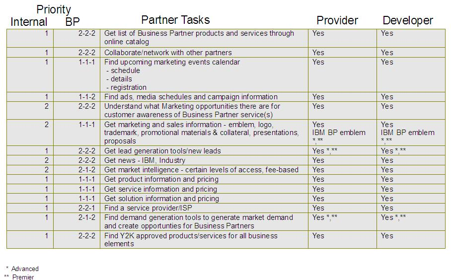

| Example: Content Model for Content Requirements |
 |
|
Relationships
| Related Elements |
|---|
Main Description
Content RequirementsAudience DescriptionEXAMPLE 1 - SOLUTION DEVELOPERS Solution Developers include independent software vendors (ISVs), Application Solution Providers and Software Developers. They are Business Partners who derive the majority of their revenue from the sale of their proprietary software. Solution Developers typically do not sell hardware; they provide software solutions, services and maintenance to end-users and influence end-users to buy vendors' products to provide a total solution. Principal Issues
(Source: Jakob Nielson, “Alertbox” http://www.useit.com/alertbox) Not only must the audience be defined, their characteristics and requirements for usability must be factored in to both the Information Architecture and the Web Content Design. The following article / example provides usability background, defines usability issues and implications related to Novice vs. Expert Users. Where funding or time is not available for user studies, use of resources such as consulting reports, “Alertbox,” etc. play a key role in overall Content Model design and success. Novice vs. Expert Users It is time to take expert user performance more seriously on the Web. Web usability has traditionally been focused on increasing ease of learning for the novice users. This makes great sense and should continue to be the main goal. Remember Jakob's Law of the Internet user experience: users spend most of their time on other sites than your own. Thus, users rarely learn enough about any given site to become true expert users. Learnability was also the focus back in the ancient days when the field of human-computer interaction was established (1983). Classic papers like Jack Carroll's Lisa Learning demonstrated that even the best commercially available personal computer was much harder to learn than claimed by Apple. Learnability was a great concern in the early 1980s for several reasons:
Much research in the late 1980s and early 1990s concerned expert user performance. Once people learn how to use a system, then what? Famous case studies looked at telephone company directory assistance user interfaces and concluded that a slightly more optimal configuration of command keys would save the American telephone companies around $10 million per year. Transaction throughput and the support of skilled users performing complex tasks became the goals of many human-computer interaction experts. Another classic example was the design of the "launch abort" button (and associated status tracking displays) for the mission director in the space program launch control center. This single button would cost many millions of dollars every time it was pushed. But if it were not pushed when it should have been, people would die. Enter the Web in the early 1990s, and the pendulum really swung back to a focus on the novice user. Web users are notoriously fickle: they take one look at a home page and leave after a few seconds if they can't figure it out. The abundance of choice and the ease of going elsewhere put a huge premium on making it extremely easy to enter a site. There is no such thing as a training class for a web site. In fact, a web site with a help system is usually a failed web site. At the same time as intuitiveness became the main goal of Web design, there were also reasons to care less about the performance of experienced users. First, as mentioned above, most sites don't have very many expert users. Second, the web site is not paying the user's salary. Who cares how much time a user spends on performing a task? As long as users buy, it doesn't matter whether they do so slowly. It's their nickel (or their employer's). Finally, the Internet has motivated huge numbers of less-technically-minded people to start using interactive systems (say, WebTV), and such users need even simpler systems. Expert Performance on the Web These are all valid reasons to continue to support novices, but the pendulum will soon start swinging a little bit in the other direction, even if it won't swing all the way back to a single-minded focus on experts:
 Audience Measurements and/or Success Criteria These should include specific definition and control points that can be measured in some way, and should correlate directly (as input) to the Measurement Plan defined as part of Content Management. EXAMPLE 1 - WEB MEASUREMENT DEFINITIONS 1. Page view (or download file) - is a logical page viewed or file downloaded through an Internet browser. A page view can usually be identified by a unique URL address. For example, http://www.software.ibm.com/ would be one page, while http://www.software.ibm.com/download/ would be another. The browser may actually request many files including graphics, Java classes, audio, html (framed pages), data files, etc. from multiple servers to construct and present the single logical page in the browser window. Each of these individual files requested is counted as a hit on the server. 2. Visit - a series of pages viewed by a visitor. If a new page is not viewed within 15 minutes, the visit is assumed to end when the last page was viewed. It is important to note that the number of visits does not necessarily equal the number of unique visitors to the site. For example, one visitor could have numerous visits within one week. 3. Visitor - an individual viewing a page or number of pages on a web site. The current Internet technology does not necessarily allow identification of an individual, but several techniques are available to attempt to gather this data:
5. Minutes/Visit is the average length, in minutes, of a visit. This number is calculated by averaging the elapsed time for each visit (time from the first page view to the last page view not including the viewing time of the last page). EXAMPLE 2 - WEB MEASUREMENT – TYPES & SCHEDULE
Competitive/Best Practices Part of the analysis that goes into the Information Architecture includes a competitive analysis and best practices. In the web environment, the “dot.com” frenzy results in many sites that are small, very reactive, and not necessarily profitable being in the position to “set the bar.” Larger organizations that have large content bases of thousands of pages, will not be able to react as quickly as a small site with only dozens or hundreds of pages. However, the expectations of the customers are being set by these smaller, more nimble organizations, and they are changing rapidly across the user base with user experience and changes in technology. |
| © Copyright IBM Corp. 1987, 2012 All Rights Reserved Property of IBM These materials are intended only for use as part of an IBM engagement |